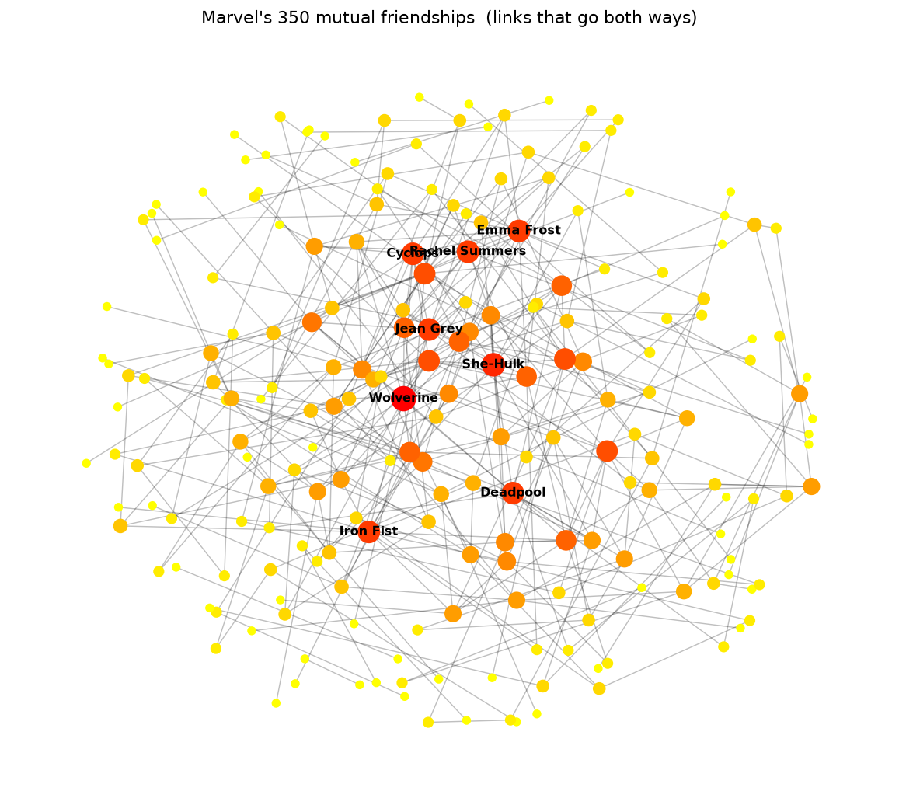

Blue = how many articles link to the character.
Orange = links inside the character's own article. Orange never crosses the wall.
links IN (fame)links OUT (article length)┆ ceiling = 28
Why the wall?
✍️ ONE writer
An out-link has to be typed into this page. You run out of article before you run
out of characters to mention. Hard cap ≈ 28.
🌐 EVERYONE else
An in-link is a vote from any of the other 302 articles. Nobody coordinates it, nobody
stops it. Spider-Man just keeps collecting. Rich get richer.
The Lonely 17
Seventeen “superheroes” that no other article links to
and that link to nobody. Hover to meet them.
17
total hermits
+41
shout into the void (link out, 0 links back)
58
have in-degree 0 (19% of the roster)
350 mutual besties
🦸 ↔ 🦸
Keep only the links that go both ways and you get the real
friendship network: 207 characters, 350 friendships. One dense core — the X-Men
corner — with Wolverine as the most-connected of all (14 mutual friends).

Dot size & colour = number of mutual
friends. This is also why 1 784 arrows collapse to 1 434 lines
when you drop direction (average friend-count ≈ 9.5).
But is it… real?
The 28-wall could just be how we scraped it. So we rebuilt the busiest
characters' out-links straight from live Wikipedia and checked.
92.8% of the original edges recovered
0 fake edges invented (precision 100%)
highest out-degree in the rebuild is still 28
Verdict: legit
Small print: the Wikipedia category has grown
303 → 380 characters since the course froze the snapshot on 2026-08-26, so the roster is a
time capsule, not “today”. Full workings:
week1_distribution.ipynb + week1_wiki_api_compare.ipynb.